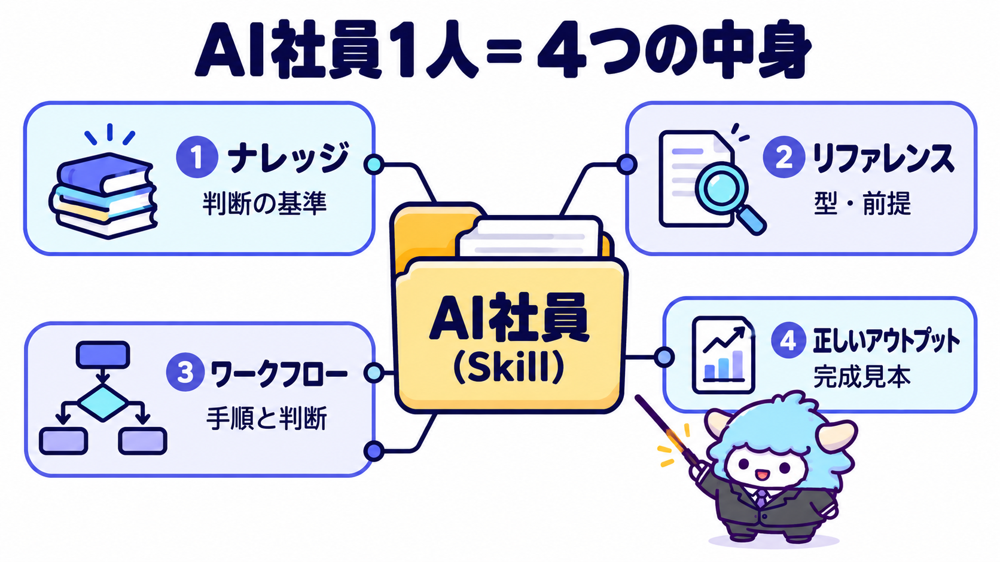
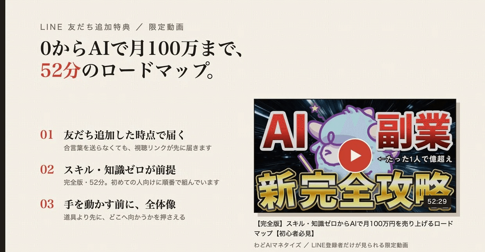

AI社員を作るAI社員
毎回チャットで説明し直している仕事を聞き取り、Claude の Skill（AI社員1人）に仕上げる。1回試して直すところまで一緒に進める。
この特典で手に入るもの
AIに仕事を頼むたびに、同じ前提・同じ注意・同じ直しを毎回説明していませんか。 この特典は、その「毎回の説明」を1回で終わらせるための道具です。
AI社員を作るAI社員に、任せたい仕事を1つ伝えると、質問しながら次の4つをそろえてくれます。

AI社員1人は「判断の基準」「型・前提」「手順」「完成見本」の4つでできています。この特典は、この4つを聞き取りで埋めていきます。
| 中身 | 何を入れるか | 無いと起きること |
|---|---|---|
| ナレッジ | 考え方・判断の基準（何を優先するか、何をしないか） | 毎回言うことが変わる |
| リファレンス | 型・チェックリスト・用語・あなたの前提 | 毎回同じ説明をし直す |
| ワークフロー | 入力→手順→出力。各手順の判断基準と、AIに任せる所／自分で決める所 | 手順が抜ける・勝手に決める |
| 正しいアウトプット | 「これが正解」という完成見本 | 出来の良し悪しが分からない |
指示文を1枚書いて終わり、ではありません。作ったAI社員で実際に1回出してみて、見本とずれた所を1か所直すところまでが、このAI社員の仕事です。
最初のゴール（今日やる1つ）
いつもAIに頼んでいる仕事を1つ選んで、AI社員1人にする。
おすすめは「月に2回以上やっていて、毎回同じことを説明している仕事」です。たとえば次のようなものです。
- セミナーや打ち合わせの後のお礼メール
- 長い資料からの要約
- SNS投稿の下書き
- 議事録から「誰が・いつまでに・何をするか」を抜き出す作業
入れ方
上のボタンから zip をダウンロードします。中身は ai-employee-maker というフォルダ1つです。
Claude Code を使っている場合
- ダウンロードした zip を、自分のパソコンの
~/.claude/skills/に展開します。ターミナルなら次の1行です
unzip ~/Downloads/ai-employee-maker.zip -d ~/.claude/skills/
- Claude Code を開き直して、
/ai-employee-makerと打って候補に出れば準備完了です
claude.ai（ブラウザ・アプリ）を使っている場合
- claude.ai の設定画面を開き、Skills の項目を探します
- ダウンロードした zip を、展開せずにそのままアップロードします
- 新しいチャットで「AI社員を作りたい」と話しかけます
Skills が使えるプランや画面の名前は変わることがあります。見つからないときは、Claude の公式ヘルプで「Skills」を検索してください。
1分の動作確認
「AI社員を作りたい。任せたいのはセミナー後のお礼メール」のように話しかけます。AI社員の方から質問が返ってくれば動いています。
進み方（7つの手順）
AI社員を作るAI社員は、次の順で進めます。あなたは質問に答えて、見本を選ぶだけです。
- 仕事を1つに絞る: 「〇〇を渡すと、〇〇が返ってくる」の1文にします。仕事が2つ出てきたら、今回作る1つを選びます
- いつもの説明を聞き取る: 10個の質問に答えます。特に大事なのは「AIの出した物を、いつもどこで直しているか」です
- 正しいアウトプットを決める: 過去にうまくいった完成物から1つを見本に選びます。無ければ一緒に1つ作って、あなたが直して確定させます
- ワークフローを書く: 見本と同じ物が出てくる手順にします
- フォルダに組み立てる: SKILL.md と、ナレッジ・リファレンス・見本の3ファイルを書き出します
- 1回試して、1か所だけ直す: 実際の材料で1回出し、見本と並べて一番大きいずれを1つ直します
- 渡す: 作ったファイルの一覧と、使い方の1文が返ってきます
聞かれる質問（先に考えておくと速い）
| 質問 | 答えの例 |
|---|---|
| この仕事は、誰に向けて何を作る仕事ですか | セミナー参加者全員に送るお礼メール |
| 何を渡すと、何が返ってくれば完成ですか | セミナー名と要点3つを渡すと、お礼メール1通 |
| AIに頼むとき、毎回説明していることは何ですか | 宛先は参加者全員、口調はです・ます |
| AIの出した物を、いつもどこで直していますか | お礼がなかなか出てこない、要点が長い |
| 絶対に言ってはいけないことはありますか | 「必ず」「誰でも」などの言い切り |
| 過去にうまくいった完成物を見せてください | 前回送ったお礼メール1通 |
一番効くのは「いつも直している所」です。ここがナレッジ（判断の基準）になり、次からは最初から直った状態で出てきます。言葉にしにくいときは、過去の完成物とAIの下書きを並べて見せれば、AI社員の方が違いを言葉にしてくれます。
できあがるもの
できあがるのは、次の形のフォルダ1つです。
seminar-thanks-mail/
├── SKILL.md ← いつ使うか・手順・出力の型・してはいけないこと
└── references/
├── knowledge.md ← 判断の基準
├── reference.md ← 型・前提・用語
└── good-output.md ← 正しいアウトプット（見本）
Claude Code なら ~/.claude/skills/ に保存すれば、次から「お礼メールを作って」で呼び出せます。claude.ai なら、このフォルダを zip にしてもらい、同じ手順でアップロードします。
公式のスキル作成ツールとの違い
Claude には、公式にもスキルを作るためのスキルがあります。こちらは、それとは目的が違います。
- 日本語の聞き取りから始める: 何を書けばいいか分からない状態から、質問に答えるだけで進みます
- 4つの中身をそろえる: 指示文だけでなく、判断の基準・型・完成見本まで別ファイルに分けて残します。あとで直す場所が迷いません
- 1回試して直すまでやる: 作って終わりにせず、見本とのずれを1か所直すところまで進めます
- AIに任せる所と自分で決める所を分ける: 作ったAI社員の出力の最後に、必ずこの区別が付きます
うまく作るコツ
- 1人に任せる仕事は1つ: 「告知文とお礼メール」のように2つ混ざると、どちらも中途半端になります。2つ目は別のAI社員にします
- 見本を先に決める: 見本が無いまま手順を作り込むと、何が正解か分からないまま直し続けることになります
- 直すのは1回に1か所: 一度に何か所も直すと、どれが効いたか分からなくなります
- 数字や実績はあなたが渡す: AI社員は、あなたが渡していない実績・数字・体験談を作らないように作られます
- 秘密の情報は入れない: パスワード・APIキー・お客様の個人情報はファイルに書かないでください
最新AIが出たときの使い方
このAI社員の指示文は、特定のモデルに合わせて書いていません。新しいモデルが出ても、手順はそのままで使えます。作ったAI社員も同じです。 モデルの名前・料金・使える範囲は変わるので、使う前に公式サイトで確かめてください。モデルを替えて出来が変わったときは、指示文を書き直す前に、見本と並べてずれを1か所だけ直してください。
最終チェックリスト
- [ ] 任せる仕事を「〇〇を渡すと、〇〇が返ってくる」の1文で言える
- [ ] ナレッジ・リファレンス・ワークフロー・正しいアウトプットの4つがファイルになった
- [ ] 見本は、自分が「これなら出せる」と確認した物にした
- [ ] 1回試して、見本とずれた1か所を直した
- [ ] パスワード・個人情報・作った数字がファイルに入っていない
- [ ] 次にAIに頼むとき、説明し直さずに呼び出せた
※成果には個人差があります。
AI社員に仕事を渡せるようになると、手元に時間が残ります。
この先は、その時間で何を作って、どう収益にするかです。そのための一本道を、1対1で一緒に作るのが「個別ロードマップ作成会」です。
予約の前に、ひとつだけお願いがあります。 公式LINEに届いている限定動画「0からAIで月100万までのロードマップ（52分）」を、先に最後まで見てください。全体像を押さえてから来てもらうと、60分を「あなたの話」だけに使えます。

動画を見終わったら、下のリンクから個別ロードマップ作成会を申し込んでください。
▶ 個別ロードマップ作成会を申し込む https://utage-system.com/line/open/jvneyR9gqb3W
個別ロードマップ作成会でできること：
60分、Zoomで1対1。話すのは参加者ひとりのことだけです。
- これまでの経験・失敗・いまの強みを、直接聞いて棚卸し
- 「本当はこうなりたい」から逆算して、現在地から収益までの一本道をその場でロードマップに
- コンテンツ販売か、AIを使った運用代行か。商品がなくても進める方向性まで一緒に決める
- 話した内容はまとめて、振り返りとして後から送る

作成会に来てくれた人限定で、豪華50大特典を渡しています。0から100までのロードマップ説明動画、AIツールの使い方をまとめた無料の会員サイト、AIの実例やマネタイズの方法まで詰め込んだ50個のコンテンツが全部もらえます。

- LINEに届いている52分のロードマップ動画を見る
- ▶ 個別ロードマップ作成会を申し込む
羊軍団で待ってますね🐑